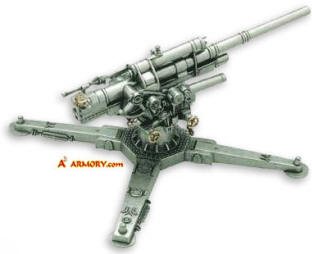
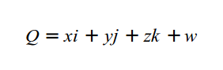
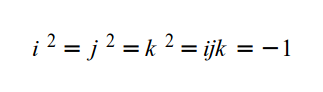
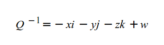
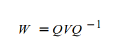
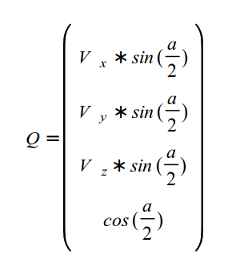
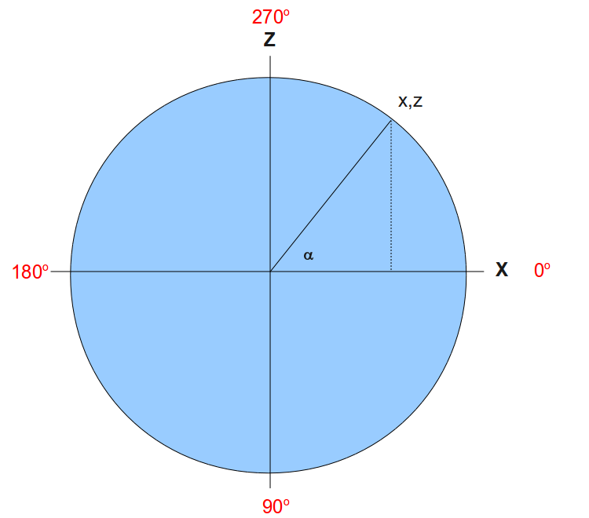

Background
In this tutorial we complete the implementation of the camera by enabling direction control using the mouse. There are various levels of freedom which are associated with the design of the camera. We are going to enable the level of control you come to expect in a first person game (shooter or otherwise). This means we will be able to turn the camera 360 degrees (around the positive Y axis), which corresponds to turning your head left or right and completing a full circle with your body. In addition, we will be able to tilt the camera up and down to get a better view above or below. We won't be able to turn the camera up until we complete a full circle or tilt it in a way a plane fuselage tilts during a turn. These levels of freedom are in the domain of flight simulators which is out of scope for this tutorial. At any rate, we will have a camera that will allow us to conveniently explore the 3D world will are going to develop in the coming tutorials.
The following world war 2 anti aircraft gun demonstrates the kind of camera we are going to build:
The gun has two control axis:
- It can turn 360 degrees around the vector (0,1,0). This angle is called the 'horizontal angle' and the vector is the 'vertical axis'.
- It can tilt up and down around a vector which is parallel to the ground. This movement is somewhat limited and the gun cannot complete a full circle. This angle is called the 'vertical angle' and the vector is the 'horizontal axis'. Note that while the vertical axis is constant (0,1,0) the horizontal axis turns around with the gun and is always perpendicular to the target of the gun. This is a key point to understand in order to get the math correctly.
The plan is to follow the movement of the mouse and change the horizontal angle when the mouse moves left and right and the vertical angle when the mouse moves up and down. Given these two angles we want to calculate the target and up vectors.
Turning the target vector by the horizontal angle is pretty straightforward. Using basic trigonometry we can see that the Z component of the target vector is the sine of the horizontal angle and the X component is the cosine of the horizontal angle (at this stage the camera looks straight ahead so the Y is zero). Revisit tutorial 7 to see a diagram of that.
Turning the target vector by the vertical angle is more complex since the horizontal axis turns along with the camera. The horizontal axis can be calculated using a cross product between the vertical axis and the target vector after is was turned by the horizontal angle, but turning around an arbitrary vector (lifting the gun up and down) can be tricky.
Luckily, we have an extremely useful mathematical tool for that problem - the quaternion. Quaternions were discovered in 1843 by Sir Willilam Rowan Hamilton, an irish mathematician, and are based on the complex number system. The quaternion 'Q' is defined as:
Where i, j and k are complex numbers and the following equation holds true:
In practice, we specify a quaternion as the 4-vector (x, y, z, w). The conjugate of quaternion 'Q' is defined as:
Normalizing a quaternion is the same as normalizing a vector. I'm going to describe the steps required to rotate a vector around an arbitrary vector using a quaternion. More details about the mathematical proof behind the steps can be found on the web.
The general function to calculate a quaternion 'W' that represents the rotated vector 'V' by the angle 'a' is:
Where Q is the rotation quaternion which is defined as:
After calculating 'W' the rotated vector is simply (W.x,W.y,W.z). An important point to note in the calculation of 'W' is that first we need to multiple 'Q' by 'V' which is a quaternion-by-vector multiplication that results in a quaternion, and then we need to do a quaternion-by-quaternion multiplication (the result of Q*V multiplied by the conjugate of 'Q'). The two types of multiplications are not the same. The file math_3d.cpp includes the implementations of these multiplication types.
We will need to keep the horizontal and vertical angles updated all the time as the user moves the mouse around the screen and we need to decide how to initialize them. The logical choice is to initialize them according to the target vector that is supplied to the constructor of the camera. Let's start with the horizontal angle. Take a look at the following diagram which looks down the XZ plane from above:
The target vector is (x,z) and we want to find the horizontal angle which is represented by the letter alpha (the Y component is relevant only for the vertical angle). Since the length of the radius of the circle is 1 it is very easy to see that the sine function of alpha is exactly z. Therefore, calculating the asine of z will provide alpha. Are we done? - not yet. Since z can be in the range [-1,1], the result of asine is -90 degrees to +90 degrees. But the range of the horizontal angle is 360 degrees. In addition, our quaternion does rotation clockwise. This means that when we rotate 90 degrees with the quaternion we end up with -1 on the Z axis which is opposite to the actual sine of 90 degrees (which is 1). IMHO, the easiest way to get this right is to always calculate the asine function using the positive value of Z and combine the result with the specific quarter of the circle where the vector is located. For example, when our target vector is (0,1) we calculate the asine of 1 which is 90 and substract it from 360. The result is 270. The asine range of 0 to 1 is 0 to 90 degrees. Combine that with the specific quarter of the circle and you get the final horizontal angle.
Calculating the vertical angle is a bit simpler. We are going to limit the range of movement to -90 degrees (equal to 270 degrees - looking straight up) to +90 degrees (looking straight down). This means we only need the negative value of the asine function of the Y component in the target vector. When Y equals 1 (looking straight up) the asine is 90 so we just need to reverse the sign. When Y equals -1 (looking straight down) the asine is -90 and reversing the sign gets us to 90. If you are confused check the diagram again and simply replace Z with Y and X with Z.
Source walkthru
(camera.cpp:38)
Camera::Camera(int WindowWidth, int WindowHeight, const Vector3f& Pos, const Vector3f& Target, const Vector3f& Up)
{
m_windowWidth = WindowWidth;
m_windowHeight = WindowHeight;
m_pos = Pos;
m_target = Target;
m_target.Normalize();
m_up = Up;
m_up.Normalize();
Init();
}
The constructor of the camera now gets the dimensions of the window. We need it in order to move the mouse to the center of the screen. In addition, note the call to Init() which sets up the internal camera attributes.
(camera.cpp:54)
void Camera::Init()
{
Vector3f HTarget(m_target.x, 0.0, m_target.z);
HTarget.Normalize();
if (HTarget.z >= 0.0f)
{
if (HTarget.x >= 0.0f)
{
m_AngleH = 360.0f - ToDegree(asin(HTarget.z));
}
else
{
m_AngleH = 180.0f + ToDegree(asin(HTarget.z));
}
}
else
{
if (HTarget.x >= 0.0f)
{
m_AngleH = ToDegree(asin(-HTarget.z));
}
else
{
m_AngleH = 180.0f - ToDegree(asin(-HTarget.z));
}
}
m_AngleV = -ToDegree(asin(m_target.y));
m_OnUpperEdge = false;
m_OnLowerEdge = false;
m_OnLeftEdge = false;
m_OnRightEdge = false;
m_mousePos.x = m_windowWidth / 2;
m_mousePos.y = m_windowHeight / 2;
glutWarpPointer(m_mousePos.x, m_mousePos.y);
}
In the Init() function we start by calculating the horizontal angle. We create a new target vector called HTarget (horizontal target) which is a projection of the original target vector on the XZ plane. Next we normalize it (since the math that was described earlier assumes a unit vector on the XZ plane). Then we check which quarter the target vector belongs to and calculate the final angle based on the positive value of the Z component. Next we calculate the vertical angle which is much simpler.
The camera has 4 new flags to indicate whether the mouse is positioned on one of the edges of the screen. We are going to implement an automatic turn in the corresponding direction when that happens. This will allow us to turn 360 degrees. We initialize the flags to FALSE since the mouse starts at the center of the screen. The next two lines of code calculate where the center of the screen is (based on the window dimension) and the new function glutWarpPointer actually moves the mouse. Starting with the mouse at the center of the screen makes life much simpler.
(camera.cpp:140)
void Camera::OnMouse(int x, int y)
{
const int DeltaX = x - m_mousePos.x;
const int DeltaY = y - m_mousePos.y;
m_mousePos.x = x;
m_mousePos.y = y;
m_AngleH += (float)DeltaX / 20.0f;
m_AngleV += (float)DeltaY / 20.0f;
if (DeltaX == 0) {
if (x <= MARGIN) {
m_OnLeftEdge = true;
}
else if (x >= (m_windowWidth - MARGIN)) {
m_OnRightEdge = true;
}
}
else {
m_OnLeftEdge = false;
m_OnRightEdge = false;
}
if (DeltaY == 0) {
if (y <= MARGIN) {
m_OnUpperEdge = true;
}
else if (y >= (m_windowHeight - MARGIN)) {
m_OnLowerEdge = true;
}
}
else {
m_OnUpperEdge = false;
m_OnLowerEdge = false;
}
Update();
}
This function is used to notify the camera that the mouse moved. The parameters are the new screen position of the mouse. We start by calculating the delta from the previous location on both the X and Y axis. Next we store the new values for the next call to the function. We update the current horizontal and vertical angles by scaling down the deltas. I'm using a scaling value which works fine for me but on different computers you may want different scaling values. We are going to improve this in a future tutorial when we add the frame rate of the application as a factor.
The next set of tests update the 'm_On*Edge' flags according to the location of the mouse. There is a margin which is by default 10 pixels that triggers the "edge" behavior when the mouse gets close to one of the edges of the screen. Finally, we call Update() to recalculate the target and up vectors based on the new horizontal and vertical angles.
(camera.cpp:183)
void Camera::OnRender()
{
bool ShouldUpdate = false;
if (m_OnLeftEdge) {
m_AngleH -= 0.1f;
ShouldUpdate = true;
}
else if (m_OnRightEdge) {
m_AngleH += 0.1f;
ShouldUpdate = true;
}
if (m_OnUpperEdge) {
if (m_AngleV > -90.0f) {
m_AngleV -= 0.1f;
ShouldUpdate = true;
}
}
else if (m_OnLowerEdge) {
if (m_AngleV < 90.0f) {
m_AngleV += 0.1f;
ShouldUpdate = true;
}
}
if (ShouldUpdate) {
Update();
}
}
This function is called from the main render loop. We need it for cases where the mouse is located on one of the edges of the screen and is not moving. In this case there are no mouse events but we still want the camera to continuously move (until the mouse moves away from the edge). We check if one of the flags is set and update the corresponding angle accordingly. If there was a change in one of the angles we call Update() to update the target and up vectors. When the mouse moves aways from the screen we detect it in the mouse event handler and clear the flag. Note the way the vertical angle is limited between the ranges -90 degrees and +90 degrees. This is to prevent a full circle when looking up or down.
(camera.cpp:214)
void Camera::Update()
{
const Vector3f Vaxis(0.0f, 1.0f, 0.0f);
// Rotate the view vector by the horizontal angle around the vertical axis
Vector3f View(1.0f, 0.0f, 0.0f);
View.Rotate(m_AngleH, Vaxis);
View.Normalize();
// Rotate the view vector by the vertical angle around the horizontal axis
Vector3f Haxis = Vaxis.Cross(View);
Haxis.Normalize();
View.Rotate(m_AngleV, Haxis);
View.Normalize();
m_target = View;
m_target.Normalize();
m_up = m_target.Cross(Haxis);
m_up.Normalize();
}
This function updates the target and up vector according to the horizontal and vertical angles. We start with the view vector in a "reset" state. This means it is parallel to the gound (vertical angle is zero) and looking directly to the right (horizontal angle is zero - see the diagram above). We set the vertical axis to point straight up and then rotate the view vector around it by the horizontal angle. The result is a vector which points in the general direction of the intended target but not necessarily in the correct height (i.e. it is on the XZ plane). By doing a cross product of this vector with the vertical axis we get another vector on the XZ plane which is perpendicular to the plane created by the view vector and the vertical axis. This is our new horizontal axis and now it is time to rotate the vector up or down around it according to the vertical angle. The result is the final target vector and we set it into the corresponding member attribute. Now we must fix the up vector. For example, if the camera is looking up, the up vector must tilt back to compensate (it must be 90 degrees in respect to the target vector). This is similar to the way the back of your head tilts back when you look up to the sky. The new up vector is calculated by simply doing another cross product between the final target vector and the horizontal axis. If the vertical angle is still zero then the target vector remains on the XZ plane and the up vector remains (0,1,0). If the target vector is tilted up or down the up vector will tilt backward or forward, respectively.
(tutorial15.cpp:209)
glutGameModeString("1920x1200@32");
glutEnterGameMode();
These glut functions enable our application to run full screen in the so called high performance 'game mode'. It makes turning the camera 360 degrees simpler because all you need to do is pull the mouse towards one of the edges of the screen. Note the resolution and the bits per pixel that are configured via the game mode string. 32 bits per pixel provides the maximum number of colors for rendering.
(tutorial15.cpp:214)
pGameCamera = new Camera(WINDOW_WIDTH, WINDOW_HEIGHT);
The camera is now allocated dynamically at this location because it performs a glut call (glutWarpPointer). This call will fail if glut has not yet been initialized.
(tutorial15.cpp:99)
glutPassiveMotionFunc(PassiveMouseCB);
glutKeyboardFunc(KeyboardCB);
We register two new glut callback functions here. One is for the mouse and the other for regular keyboard clicks (the special keyboard callback traps directional and function keys). Passive motion means that the mouse moves without any of its buttons pressed.
(tutorial15.cpp:81)
static void KeyboardCB(unsigned char Key, int x, int y)
{
switch (Key) {
case 'q':
exit(0);
}
}
static void PassiveMouseCB(int x, int y)
{
pGameCamera->OnMouse(x, y);
}
Now that we are using a full screen mode it is more difficult to exit the application. The keyboard callback traps the 'q' key and exits. The mouse callback simply transfers the location of the mouse to the camera.
(tutorial15.cpp:44)
static void RenderSceneCB()
{
pGameCamera->OnRender();
Whenever we are in the main render loop we must notify the camera. This gives the camera a chance to turn when the mouse is not moving and is on one of the screen edges.
For more information on this subject check out the following video tutorial by Frahaan Hussain.
Next tutorial